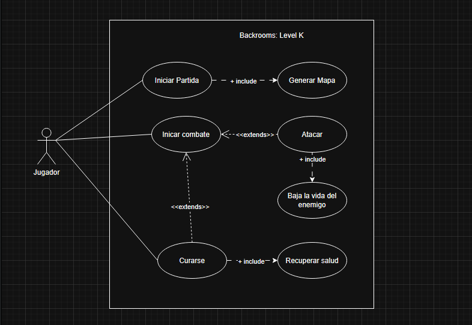
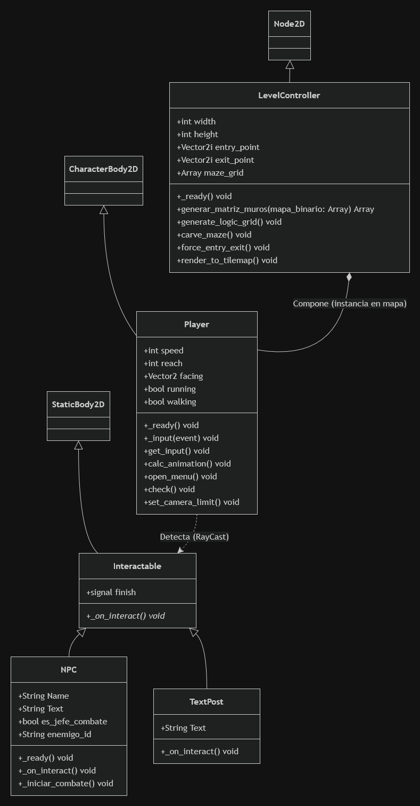
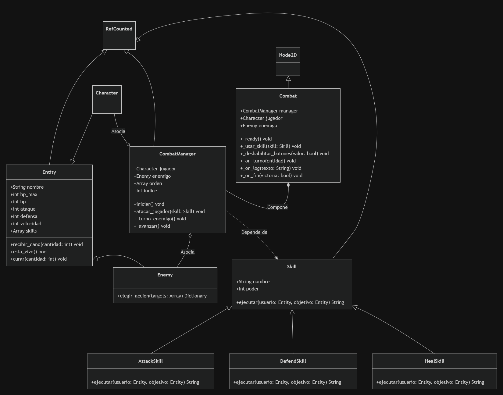
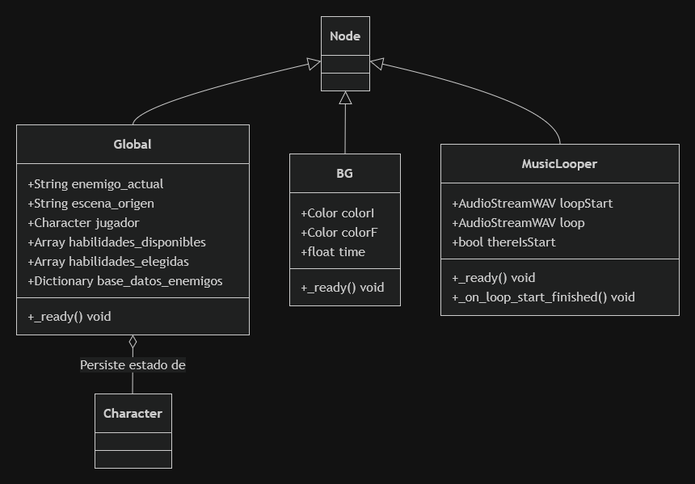
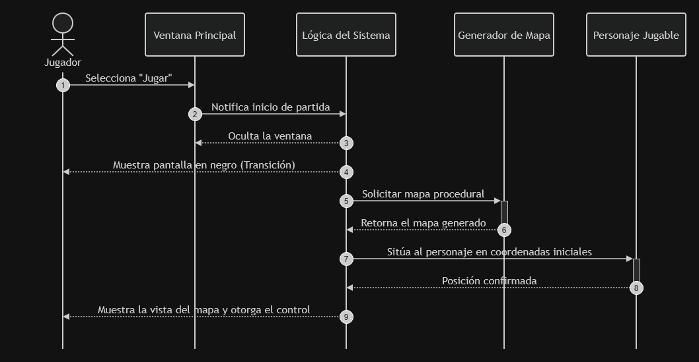

Pruebas
Prueba del Caso de Uso 1

Blabla
Sebastian Saldias, Alvaro Leal, Pablo Gonzales, Alejandro Diaz
Como estudiantes universitarios, siempre nos encontramos bajo un estrés constante y una ansiedad incesante. Día a día nos levantamos para asistir a la universidad con proyectos pendientes, tareas sin terminar y controles que se aproximan. El problema que intentamos abordar y representar con nuestro videojuego es el agónico estrés que se sufre a medida que se afronta el semestre universitario.
Para modelar esta experiencia, el sistema se estructura en torno a la interacción constante entre las decisiones del mundo real y las consecuencias en el entorno virtual. El Jugador asume el rol de usuario principal. Para interactuar con el sistema y el juego, el jugador lo hace mediante el Personaje Jugable (PJ), el cual posee atributos como vida, ataque, defensa y velocidad. A medida que el jugador explora el mapa, el PJ interactúa y se enfrenta a los Enemigos (NPCs). Estas entidades, controladas por el sistema, son los enemigos comunes en el contexto universitario, tomando la forma de controles escritos o profesores emblemáticos que poseen sus propias estadísticas y habilidades para complicar el progreso del estudiante.
Para la implementación del proyecto se utiliza Godot Engine, un motor de videojuegos cuya arquitectura se basa en nodos y escenas. Esta estructura modular permite construir los elementos del juego de forma independiente e instanciable, logrando un alto nivel de desacoplamiento entre la exploración y el combate. La lógica interna se desarrolla en GDScript, su lenguaje nativo orientado a objetos. Esto facilita la aplicación de conceptos formales de ingeniería de software en la arquitectura del juego, tales como la herencia de clases para estructurar las habilidades, el patrón Singleton para la persistencia de datos globales, y el uso de señales para actualizar componentes visuales de manera eficiente y sin dependencias acopladas.
Inicio de partida: El jugador navega por la ventana principal del juego y selecciona jugar. El sistema automáticamente procesa que el jugador ha seleccionado la opción de jugar, por lo que genera un mapa de manera procedural. Una vez el mapa es creado, se sitúa al PJ en este y finalmente se le muestra lo generado al jugador.
Iniciar un combate: El jugador entra en el área de detección de un enemigo y cuando este es alcanzado por el NPC, el sistema cambia la vista del mapa a la vista de combate, calculando la vista del enemigo, mostrando las opciones dentro del combate y finalmente muestra al jugador la perspectiva dentro del combate con todo calculado y preparado.
Jugador ataca: El jugador selecciona la opción atacar dentro de la vista de combate, por lo que el sistema calcula el daño que recibe el enemigo, cambia los valores de la vida restante del NPC dependiendo de la cantidad de defensa de este y finalmente realiza la animación de ataque del PJ y enseña el daño que se le realizó al NPC.
Curarse: El jugador selecciona la opción de curarse, lo cual puede hacer dentro o fuera de combate.

A continuación se mostrarán los diferentes diagramas de clases separados por el contexto del proyecto, ya que resulta más fácil y ordenado mostrar de esta forma cómo se relacionan las clases entre sí. Algunas clases son usadas para la generación del mapa y la interacción de las entidades en este, otras para la lógica de los combates, y además se cuenta con algunas dedicadas a la persistencia de datos.
Este módulo gestiona la generación procedural del campus y la interacción física del jugador (PJ) con los profesores y controles (NPCs).

Aquí se concentra la lógica orientada a objetos de la batalla por turnos, aplicando herencia para las distintas habilidades y encapsulando el flujo mediante un Manager.

Componentes Singleton responsables de la persistencia de datos (estadísticas del jugador, base de datos de enemigos) durante las transiciones de escena.

Este diagrama ilustra lo que ocurre al iniciar el juego, representando específicamente el caso de uso "Inicio de partida".

Para generar el archivo de documentación realiza los siguientes pasos:
/proyecto-elo329."ruta-del-ejecutable-de-Godot\Godot_v4.6-stable_win64.exe" --doctool ./docs --gdscript-docs .py xml_to_html.pydocs y abre el archivo generado de nombre documentacion.html.
Blabla
Durante el desarrollo del videojuego, se presentaron los siguientes desafíos técnicos relacionados con el entorno de Godot y GDScript:
| Dificultad Presentada | Solución Implementada |
|---|---|
| 1. Control y estabilización del movimiento enemigo: Durante la implementación de las mecánicas de pathfinding, los enemigos comunes presentaban comportamientos erráticos en el motor de físicas, tales como desplazarse a velocidades desproporcionadas o desaparecer abruptamente de los límites de la escena gráfica. | Se diseñó e implementó una clase dedicada denominada Movement. Esta clase encapsula y estandariza exclusivamente la lógica matemática de desplazamiento y cálculo de deltas de tiempo para los enemigos comunes, permitiendo un control preciso sobre sus velocidades y colisiones sin afectar el comportamiento de otras entidades o del jugador. |
| 2. Mapeo de texturas en la generación procedural del entorno: Se presentó una alta complejidad al intentar asignar correctamente los assets visuales (específicamente texturas de paredes y techos) sobre la matriz lógica del laberinto generada proceduralmente, provocando solapamientos o renderizados inconsistentes en el TileMap. | Tras múltiples iteraciones analíticas y pruebas de renderizado, se refactorizó la lógica algorítmica dentro de las clases encargadas de generar el mapa. Se ajustaron las reglas de lectura de la cuadrícula, asegurando que el sistema interprete correctamente las coordenadas relativas para colocar la textura exacta (suelo, pared o techo) según el contexto del bloque adyacente. |
| 3. Persistencia del estado del mapa en transiciones de escena: Al iniciar un evento de pelea, la transición estructural hacia la escena de combate provocaba que el árbol de nodos del mapa procedural se destruyera (liberándose de la memoria), obligando a generar un nivel completamente nuevo al intentar volver a la exploración. | Se modificó el flujo de gestión de escenas utilizando la memoria global. En lugar de destruir el nivel, el mapa generado se retiene en memoria (pausando sus procesos). Una vez finalizado el encuentro, la escena de combate simplemente se oculta o elimina, y se restaura el entorno previamente guardado, conservando intacta la disposición del laberinto y la ubicación del jugador. |
El código fuente (junto con su respectivo README) se encuentra disponible en el siguiente enlace:
Ir al repositorio en GitHubSebastian Saldias, Alvaro Leal, Pablo Gonzales, Alejandro Diaz
Como estudiantes universitarios, siempre nos encontramos bajo un estrés constante y una ansiedad incesante. Día a día nos levantamos para asistir a la universidad con proyectos pendientes, tareas sin terminar y controles que se aproximan. El problema que intentamos abordar y representar con nuestro videojuego es el agónico estrés que se sufre a medida que se afronta el semestre universitario.
Para modelar esta experiencia, el sistema se estructura en torno a la interacción constante entre las decisiones del mundo real y las consecuencias en el entorno virtual. El Jugador asume el rol de usuario principal, para interactuar con el sistema y el juego, el jugador lo hace mediante el Personaje Jugable (PJ), el cual posee atributos como vida, ataque, defensa y velocidad. A medida que el jugador explora el mapa, el PJ interactúa y se enfrenta a los Enemigos (NPCs). Estas entidades, controladas por el sistema, son los enemigos comunes en el contexto universitario, tomando la forma de controles escritos o profesores emblemáticos que poseen sus propias estadísticas y habilidades para complicar el progreso del estudiante.
Para la implementación del proyecto se utiliza Godot Engine, un motor de videojuegos cuya arquitectura se basa en nodos y escenas. Esta estructura modular permite construir los elementos del juego de forma independiente y instanciable, logrando un alto nivel de desacoplamiento entre la exploración y el combate. La lógica interna se desarrolla en GDScript, su lenguaje nativo orientado a objetos. Esto facilita la aplicación de conceptos formales de ingeniería de software en la arquitectura del juego, tales como la herencia de clases para estructurar las habilidades, el patrón Singleton para la persistencia de datos globales, y el uso de señales para actualizar componentes visuales de manera eficiente y sin dependencias acopladas.
Inicio de partida: El jugador navega por la ventana principal del juego y selecciona jugar. El sistema automáticamente procesa que el jugador ha seleccionado la opción de jugar, por lo que genera un mapa de manera procedural. Una vez el mapa es creado, se sitúa al PJ en este y finalmente se le muestra lo generado al jugador.
Iniciar un combate: El jugador entra en el área de detección de un enemigo y cuando este es alcanzado por el NPC, el sistema cambia la vista del mapa a la vista de combate, calculando la vista del enemigo, mostrando las opciones dentro del combate y finalmente muestra al jugador la perspectiva dentro del combate con todo calculado y preparado.
Jugador ataca: El jugador selecciona la opción atacar dentro de la vista de combate, por lo que el sistema calcula el daño que recibe el enemigo, cambia los valores de la vida restante del NPC dependiendo de la cantidad de defensa de este y finalmente realiza la animación de ataque del PJ y enseña el daño que se le realizó al NPC.
Curarse: El jugador selecciona la opcion de curarse, lo puede hacer dentro o fuera de combate
A continuacion se mostraran los diferentes diagramas de clases diseccionados por contexto del proyecto, pues es mas facil y ordenado el mostrar de esta forma el como se relacionan las clases entre si al tener contextos diferentes, pues algunas clases son usadas para la generacion del mapa y la interaccion de las entidades en este y otras para la logica dfe los combates ademas de tener algunas para la persitencia de datos.
Este módulo gestiona la generación procedural del campus y la interacción física del jugador (PJ) con los profesores y controles (NPCs).
Aquí se concentra la lógica orientada a objetos de la batalla por turnos, aplicando herencia para las distintas habilidades y encapsulando el flujo mediante un Manager.
Componentes Singleton responsables de la persistencia de datos (estadísticas del jugador, base de datos de enemigos) durante las transiciones de escena.
Este diagrama ilustra loo que ocurre al inicar el juego, reperesentando especificamente el caso de uso "Inicio de partida"
La documentación técnica y de implementación se encuentra detallada directamente en el código fuente del proyecto mediante comentarios. No se incluyen archivos generados (como Javadoc) en esta entrega para evitar redundancia.
Blabla
Durante el desarrollo del videojuego, se presentaron los siguientes desafíos técnicos relacionados con el entorno de Godot y GDScript:
| Dificultad Presentada | Solución Implementada |
|---|---|
| 1. Control y estabilización del movimiento enemigo: Durante la implementación de las mecánicas de pathfinding, los enemigos comunes presentaban comportamientos erráticos en el motor de físicas, tales como desplazarse a velocidades desproporcionadas o desaparecer abruptamente de los límites de la escena gráfica. | Se diseñó e implementó una clase dedicada denominada Movement. Esta clase encapsula y estandariza exclusivamente la lógica matemática de desplazamiento y cálculo de deltas de tiempo para los enemigos comunes, permitiendo un control preciso sobre sus velocidades y colisiones sin afectar el comportamiento de otras entidades o del jugador. |
| 2. Mapeo de texturas en la generación procedural del entorno: Se presentó una alta complejidad al intentar asignar correctamente los assets visuales (específicamente texturas de paredes y techos) sobre la matriz lógica del laberinto generada proceduralmente, provocando solapamientos o renderizados inconsistentes en el TileMap. | Tras múltiples iteraciones analíticas y pruebas de renderizado, se refactorizó la lógica algorítmica dentro de las clases encargadas de generar el mapa. Se ajustaron las reglas de lectura de la cuadrícula, asegurando que el sistema interprete correctamente las coordenadas relativas para colocar la textura exacta (suelo, pared o techo) según el contexto del bloque adyacente. |
| 3. Persistencia del estado del mapa en transiciones de escena: Al iniciar un evento de pelea, la transición estructural hacia la escena de combate provocaba que el árbol de nodos del mapa procedural se destruyera (liberándose de la memoria), obligando a generar un nivel completamente nuevo al intentar volver a la exploración. | Se modificó el flujo de gestión de escenas utilizando la memoria global. En lugar de destruir el nivel, el mapa generado se retiene en memoria (pausando sus procesos). Una vez finalizado el encuentro, la escena de combate simplemente se oculta o elimina, y se restaura el entorno previamente guardado, conservando intacta la disposición del laberinto y la ubicación del jugador. |
El código fuente (junto con su respectivo README) se encuentra disponible en el siguiente enlace:
Ir al repositorio en GitHub